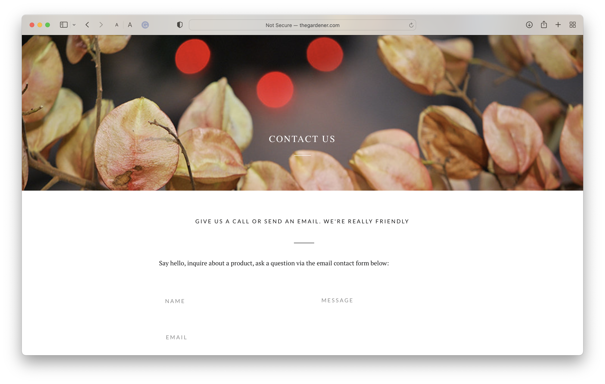
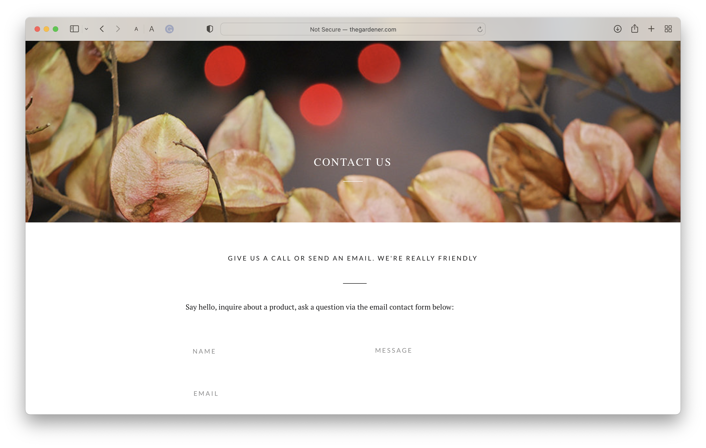
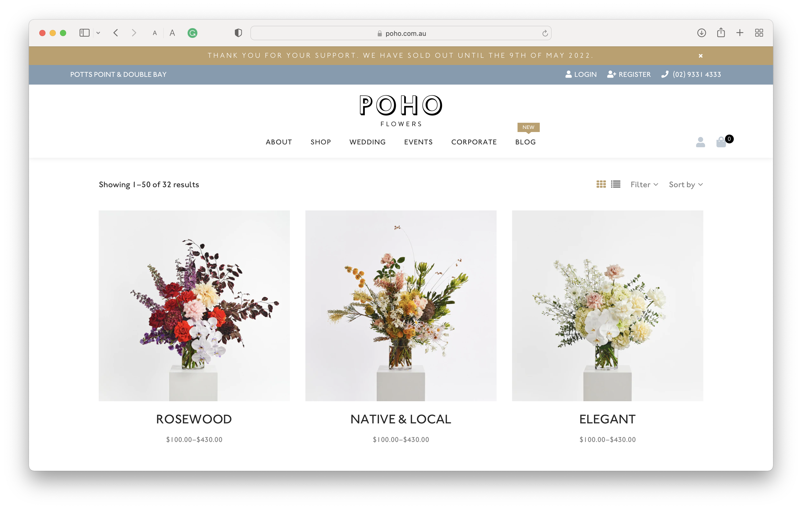
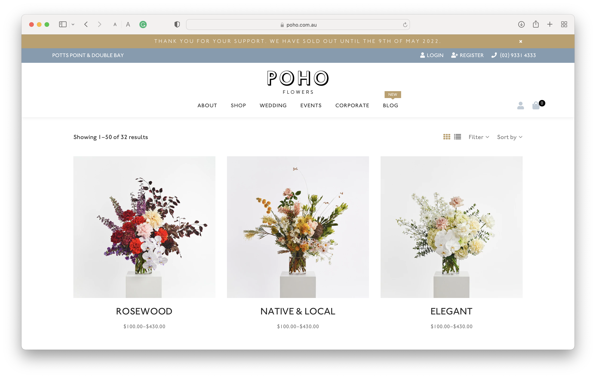

Final project proposal
Introduction
Tsuki
Tsuki is a Ikebana and general flower shop, where customers can come to buy beautiful flowers and garden goods, and learn about traditional japanese flower arrangement.
Target audience
People looking for flowers for any occaision: from celebrating a special day to, beautiful arrangements in living spaces. They come to the website to look at the flower arrangement services, learn about class offerings, gardening goods and the hours and location of the shop.
To buy flowers and garden goods for themselves or others. Also people are able to learn about japanese flower arrangement.
Comparative analysis
thegardener.com
 

poho.com
 

japanesegarden.org

Website content
Home
TsukiOpen daily: 8:30am-4:00pm
100 Hana St. San Luis Obispo, CA
(415)-555-4444
[A group of people sitting in a class setting watching the teacher work on an ikebana(japanese flower arrangement)arrangement.]
About
Tsuki is a Ikebana and general flower shop, where customers can come to buy beautiful flowers and garden goods, and learn about traditional japanese flower arrangement.
[Group picture of employees smiling together standing outside of the flower shop.]
Take Ikebana Classes
Come learn about about japanese culture and take a Ikebana class with us!
For information on private lessons please contact us at our store number.
Sign Up Here!
-
Beginning
Available to anyone and everyone!
-
Advanced
For those who want to take a deeper dive in to the world of Ikebana
[Woman looking happily at a flower arrangement that she's making.]
Garden Ware
We offer a variety of timeless earthen wares and gardening products
-
Flower Pot
Handcrafted in our home studio these ceramic bowls are crafted with care using traditional japanese techniques
$25
-
Katori-Senko and incense holder
A natural mosquito repellent that allows you to work without the bother of mosquitoes and without the use of harmful chemicals. This delight comes with 10 incense coils and a raku fired holder.
$40
-
Furin(pair)
"furin" meaning wind bell, these japanese wind chimes make for a pleasent summer afternoon
$15
-
Garden Shears
Hand crafted by japanese smiths, a lovely pair of shears that stays sharp and comfortable for a long time
$40
-
Garden Trowel
Hand crafted by japanese smiths, this sturdy trowel will support you through the nitty gritty
$30
-
Kama
Traditional Japanese farm tool original used to farm rice, this tool is extremely sharp and great for weeding and clearing
$45
-
Jizo Statue
"Jizo", Earth Bearers as they are called, are made in the image of Jizo Bosatsu, guardian deity of children and travellers
$70
-
Zen Garden Gravel
A great start to japanese living. Please contact us for more information on this product.
$50 starting
[Person gardening on a sunny day using clippers trimming a plant.]
Arrangment Services
We offer a variety of Ikebana arrangement services including weddings and other special occaisions. Please contact us by phone at (415) 555-4444 for a quote and consultation
For in home, we also have ikebana arrangements by Tsuki's own professionals:
-
Small Arrangement
$40
-
Medium Arrangement
$70
-
Large Arrangement
$120
[Image of wedding with flowers surrounding the couple at the altar.]